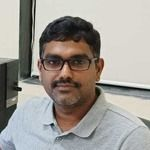
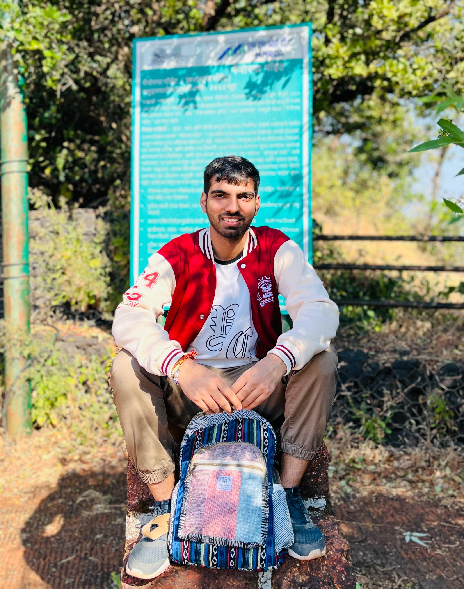
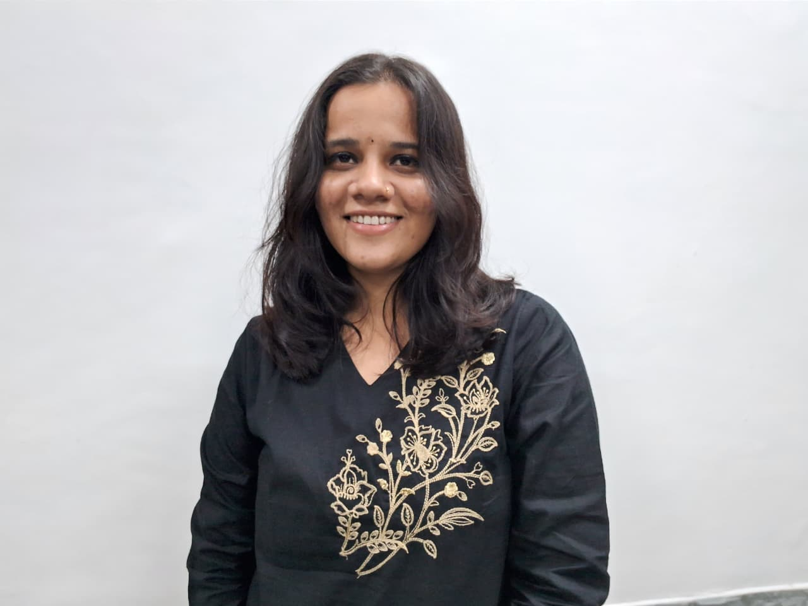
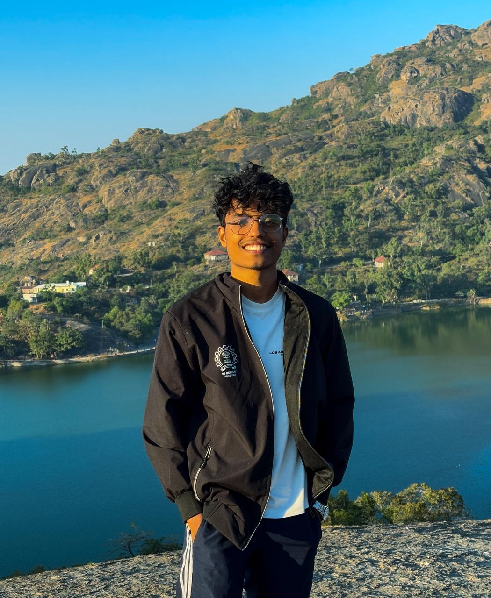
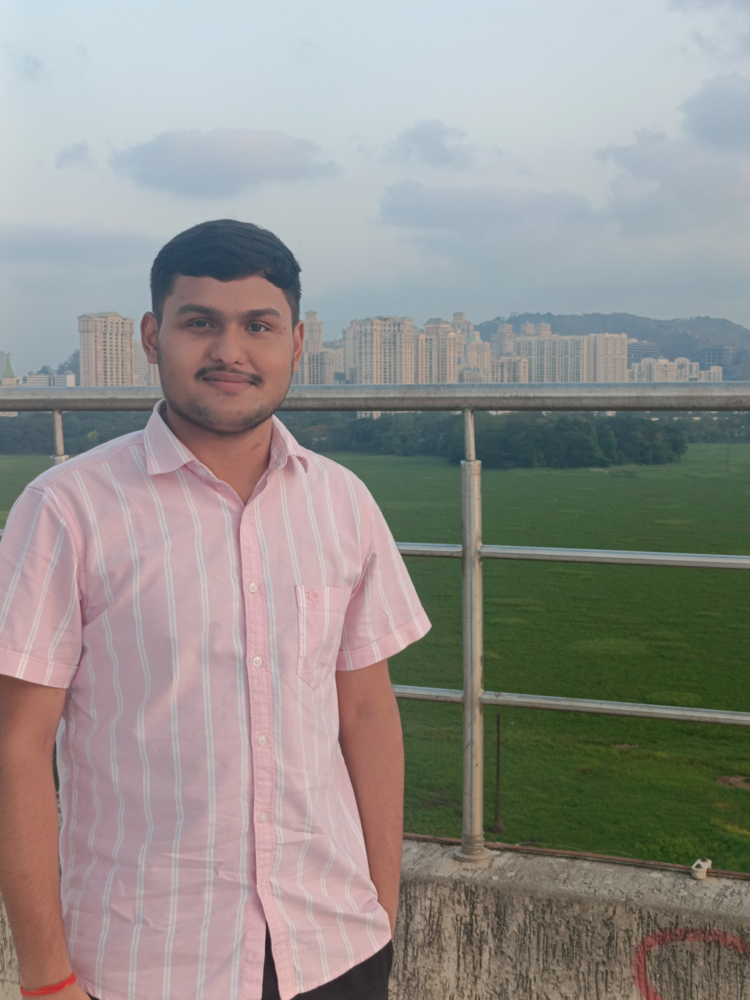

About the Chapter
The International Association for Mathematical Geosciences (IAMG) is a globally recognized scientific organization committed to advancing the application of mathematical and computational methods in the geosciences. Founded in 1968, IAMG serves as a bridge between geoscientists, mathematicians, statisticians, and computer scientists, encouraging interdisciplinary research to address complex challenges related to Earth systems, natural resources, and the environment.
IAMG supports a wide range of activities, including the publication of high-impact scientific journals such as Mathematical Geosciences, Computers & Geosciences, and Natural Resources Research. It organizes international conferences, workshops, and short courses to facilitate the exchange of ideas and the development of cutting-edge techniques in areas such as geostatistics, spatial data analysis, machine learning, and numerical modeling.
The association also actively promotes the involvement of young researchers through its student chapters, scholarships, and awards, fostering a global community of like-minded individuals passionate about quantitative geoscience. IAMG’s mission is to enhance scientific understanding of the Earth by integrating rigorous mathematical tools with geoscientific insights, ultimately contributing to informed decision-making in areas such as resource management, environmental protection, and hazard assessment.
IIT Bombay Student Chapter
IAMG IITB Student Chapter was approved on 24th April, 2025 by IAMG and is initiation of the Department of Earth Sciences, IIT Bombay. IAMG-IITB Student chapter is introduced first time from July 2025-26 session at IIT Bombay. The IAMG Student Chapter at IIT Bombay is established to bring together like-minded researchers from premier academic institutions and leading scientific organizations such as ISRO, CSIR labs, ONGC, and GSI. Our mission is to foster interdisciplinary collaboration, promote IAMG activities, and create a dynamic platform for knowledge exchange and innovation in the geoscience community.
The chapter aims to:
- Encourage the application of quantitative methods in geoscience research
- Build a vibrant interdisciplinary community among students and researchers
- Organize workshops, talks, and collaborative projects to promote learning and innovation
- Provide students opportunities to participate in conferences, seminars, and networking sessions
- Connect with the global IAMG community and contribute to advancing geosciences through data and mathematics
Council Members

Prof. Srinivasa Rao Gangumalla
Faculty Advisor

About Me
Hey, I am Mridul Yadav, the current President of IAMG-IITB student chapter. I am a graduate doctoral student at the Department of Earth Sciences, IIT Bombay. My research interests include hydrogeodesy, geophysical inversion, and groundwater prospecting.

Kajal Jingar
General Secretary
About Me
Hey, I am Kajal Jingar, General Secretary of IAMG-IITB Student Chapter. I am in my final year of MSc. Applied Geophysics student. I worked on and am passionate about the areas such as seismic data processing, Geophysical surface wave inversion and analysis

About Me
Hey, I am Akash, currently pursuing the final year of MSc. Applied Geophysics. I am currently serving as Web secretary for the IAMG-IITB student chapter. I am Passionate about Bayesian inversion, energy transition, and applying machine learning in various geophysical problems

About Me
Hey, I am Praveen Kumar Shukla, Treasurer of IAMG-IITB Student Chapter. I am in my final year of MSc. Applied Geology student. I work in areas such as CCUS and geomechanics
Activities
1. The inauguration function of the IAMG student chapter was held on 20th August, 2025, at Room No 21, VMCC, IIT Bombay (August 20, 2025).
The inauguration of IAMG-IITB Student Chapter held on August 20, 2025, with a guest Prof. Archana Bhattacharyya, INSA Honorary Scientist, Indian Institute of Geomagnetism to promote and establish the student chapter at VMCC Seminar Room No. 21, IIT Bombay. The inaugural function hosted more than 120 students and professors. Prof. Bhattacharyya also delivered the inaugural lecture of the IAMG-IITB Student Chapter on the topic “Mathematics in Geomagnetism and Aeronomy: From Gauss to Artificial Intelligence”. The following are some glimpses of the function.
2. First meeting of IAMG-IITB student chapter council (April 30, 2025)
IAMG–IITB IAMG student chapter got approval on April 24, 2025, by the profound mentorship of Prof. E. Chandrasekhar and Prof. G. Srinivasa Rao from the Department of Earth Sciences, IIT Bombay. IAMG council held its first meeting on 30th April, 2025, and the way forward and plans for the upcoming session were discussed.
3. Student chapter president introduced IAMG–IITB Student Chapter during UG and PG departmental orientation at the Department of Earth Sciences, IIT Bombay (July 23–25, 2025).
Autumn semester orientation for Undergraduate and Post Graduate Program was conducted on 23rd July and 24th July respectively. Student Chapter president Mr. Mridul Yadav introduced the IAMG–IITB student chapter.
4. IAMG–IITB Student Chapter Conducted Workshop on Spatial Statistical Analysis at Department of Earth Sciences, IIT Bombay (December 29, 2025).
The IAMG–IITB Student Chapter conducted a student-led, hands-on workshop on Spatial Statistical Analysis on 29 December 2025 in hybrid mode, with participation from students and IAMG members both on campus and online. The workshop included a short theoretical session followed by a QGIS-based hands-on exercise, where participants learned spatial data handling, digitisation, and basic spatial statistical analysis.
5. IAMG-IITB Student Chapter Conducted a student interactive session on Cryosphere research at the Department of Earth Sciences, IIT Bombay (February 26, 2026).
The IAMG-IITB Student Chapter organised a student interaction titled "Insights into Cryosphere Research" on 26 February 2026 at the Department of Earth Sciences, IIT Bombay. The session featured engaging discussions with distinguished researchers Dr Remya S N, Dr Atanu Bhattacharya, and Dr Vishnu Nandan, who shared their expertise and research experiences in cryosphere science. Students gained valuable insights into current developments and research opportunities in this rapidly evolving field.
How to Join
IAMG-IIT Bombay Student Chapter encourages geoscientists, statisticians, and other interested individuals. Join our student chapter by following the membership link provided below.
For all the events/activities organised by the IIT Bombay Student Chapter, registration and participation fees/charges are waived for IAMG members.
Link: https://iamg.org/become-a-member